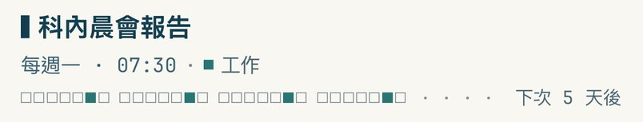
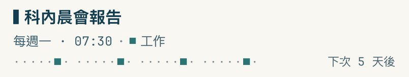
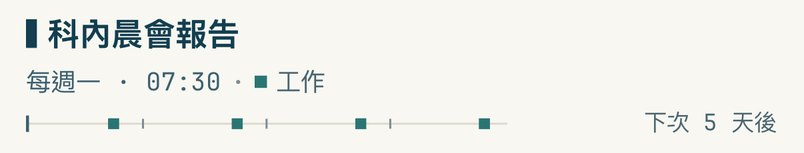
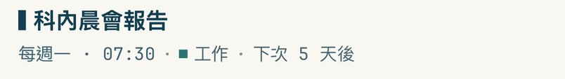
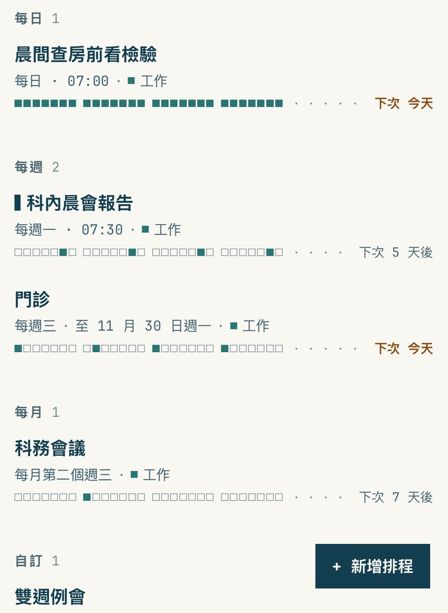
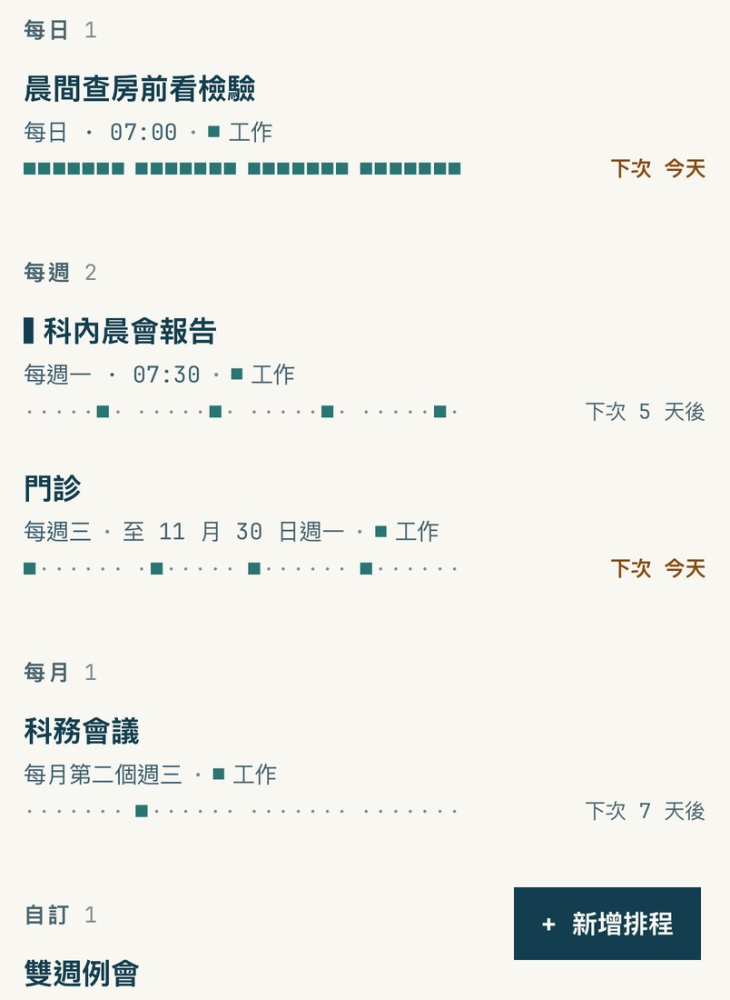
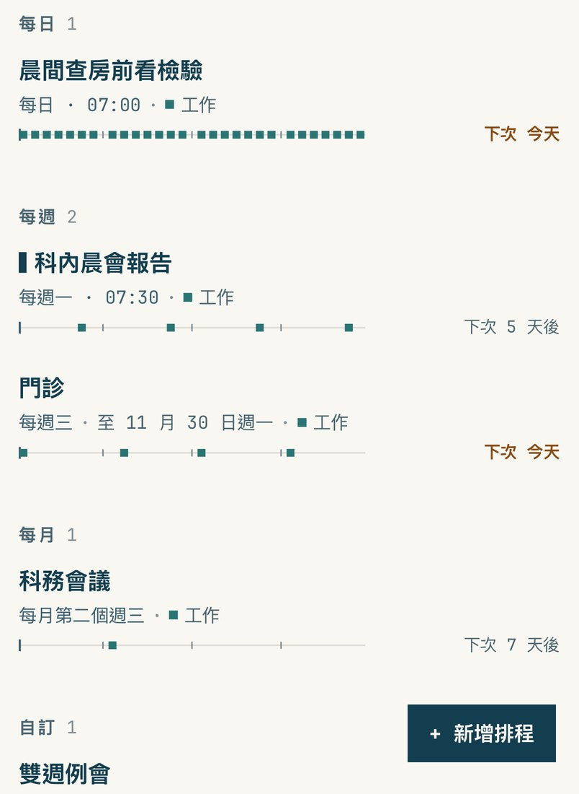
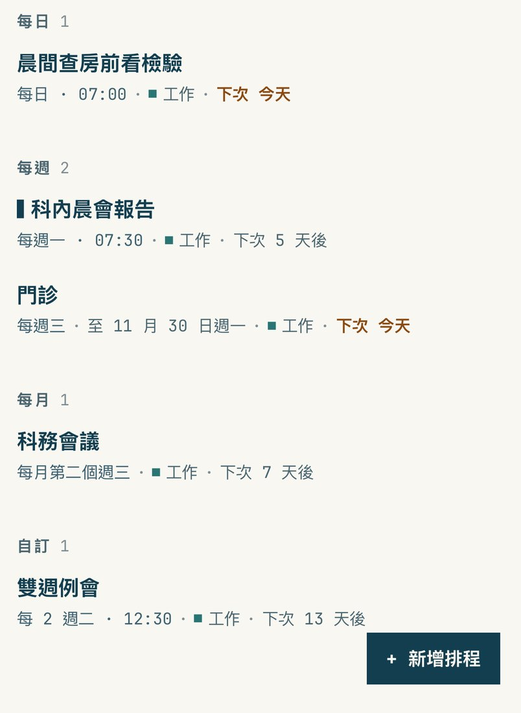

每一列下面那排是「接下來四週哪幾天有」。打字機外觀、同一份假資料（不是你手機上的資料），只有節奏條不一樣。
我推薦 C 不畫：頻率第二行已經寫了（每週一、每月第二個週三），真正要看的是「下次什麼時候」，列表也最清爽。 想保留一點節奏感的話選 A 點。回覆字母就好（目前／A／B／C）。




每一天一格：■ 有、□ 沒有。每週、每月的事項幾乎整排都是空心框，看起來很雜。

沒有的那幾天退成小點 ·，只剩有的那幾天是方塊，一眼看得出「哪幾天有」。行尾的點線拿掉，「下次 …」直接靠右。

一條細線代表接下來四週，有的那天放一個色塊；最左邊的墨色短線是今天，淡色小刻度是每週的分界。

列表不畫節奏條，「下次 5 天後」接在第二行的最後面。每一列變矮，同一個畫面看得到更多事項；點進詳細內容仍看得到四週的節奏（用 A 的畫法）。
